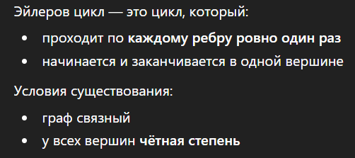
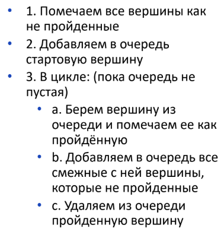
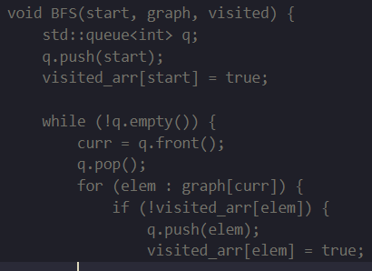
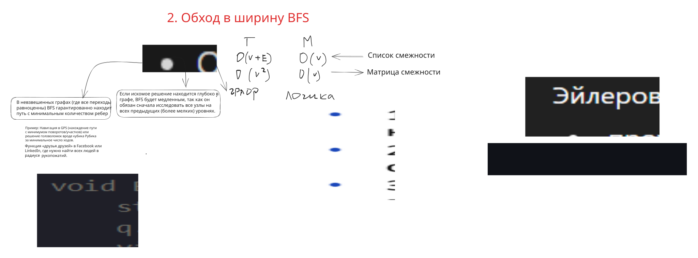
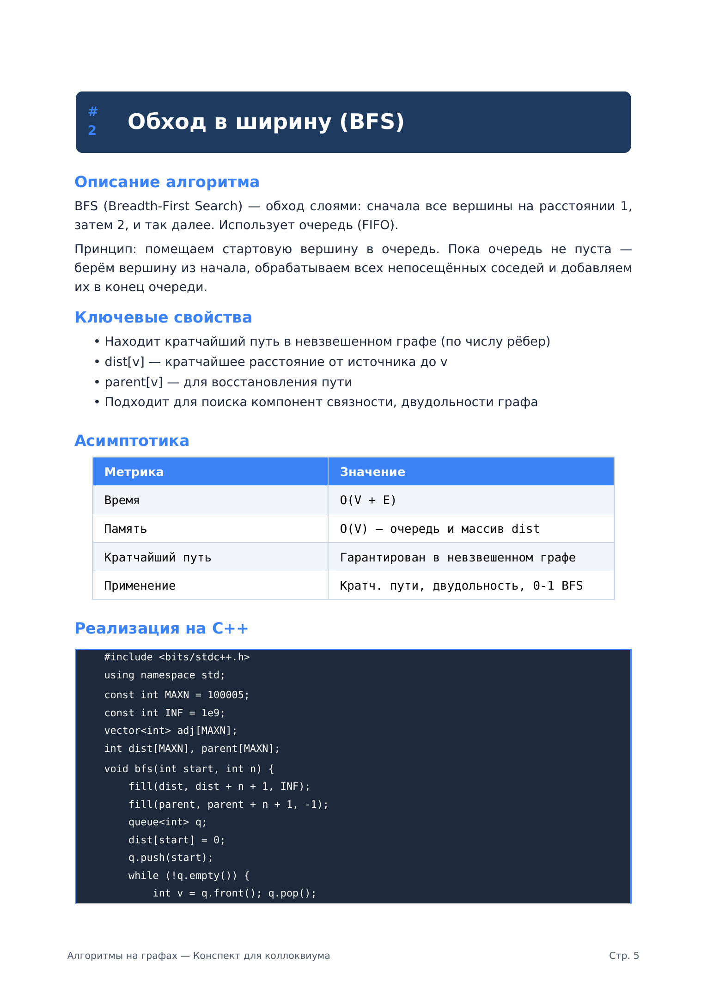
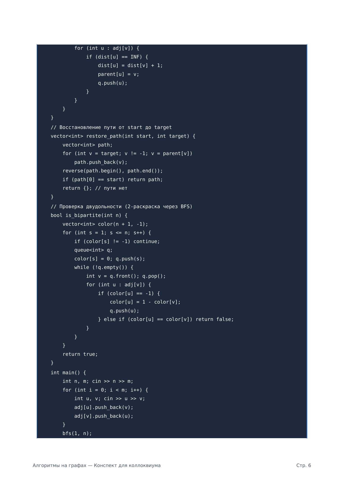

2. Поиск в ширину (BFS)
Представления графа, очередь BFS и стек DFS на одной схеме.
Материалы и примеры по пунктам
Обход в ширину BFS

Список смежности
Матрица смежности

В невзвешенных графах (где все переходы равноценны) BFS гарантированно находит путь с минимальным количеством ребер
Если искомое решение находится глубоко в графе, BFS будет медленным, так как он обязан сначала исследовать все узлы на всех предыдущих (более мелких) уровнях.

Пример: Навигация в GPS (нахождение пути с минимумом поворотов/участков) или решение головоломок вроде кубика Рубика за минимальное число ходов.
В социальной сети BFS находит людей, связанных со стартовой вершиной не более чем заданным числом знакомств. Такое расстояние также называют числом рукопожатий.

Схемы и рукописные примеры

Страницы из PDF

